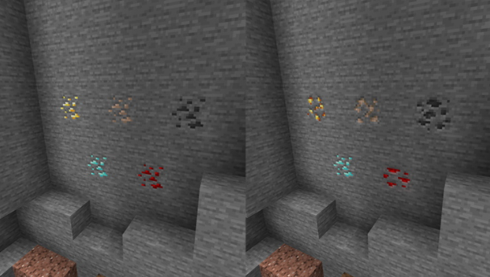

2020, November 27. - 7 új Horror pálya érkezett a Realm világokba.
2020, December 7. - 12 új pálya érkezett a Realm világokba.
2020, December 18. - 17 új pálya érkezett a Realm világokba.
2021, Február 5. - 8 új pálya érkezett a Realm világokba.
-1.17 Snapshot 21W07A-
Új blokk: Grimstone
Új crafting receptek készültek ennek a blokknak a bejövételével
